野銀部落地下屋
野銀部落野銀是目前保存最完整的傳統聚落。半穴式地下屋往地下挖、屋頂貼近地面，就地取材又順應地形，是祖先對抗颱風的智慧，也是減少碳足跡的永續建築。
提醒：地下屋是族人的家，須由族人帶領參觀，不擅自進入。
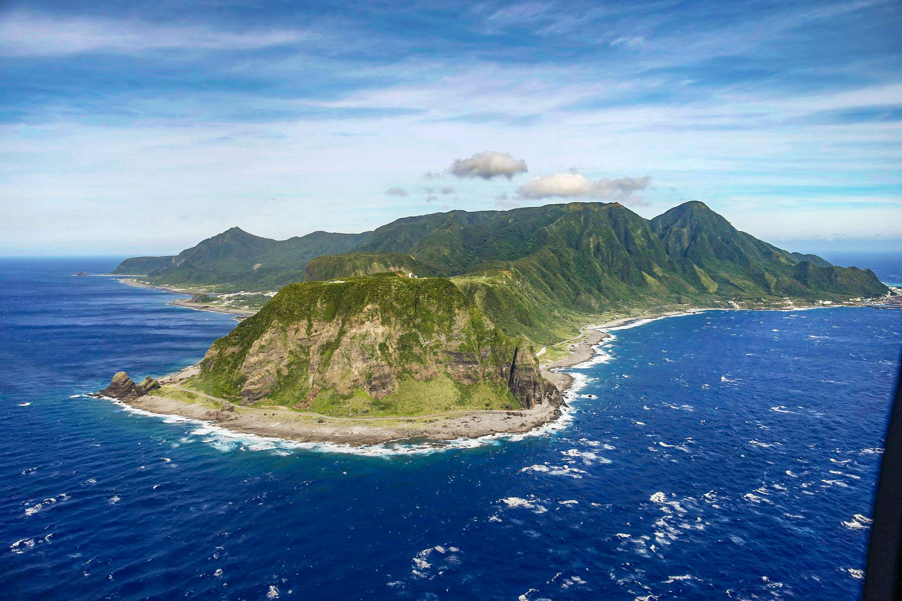
蘭嶼位在台東東南方的太平洋上，達悟族人稱這座島為 Pongso no Tao，意思是「人之島」。島上有椰油、漁人、紅頭、野銀、東清、朗島六個部落，一條環島公路把它們串在一起。
達悟族的飛魚祭不只是祭典，也是一套「不竭澤而漁」的資源管理方式：什麼季節捕什麼魚、捕多少，都有規矩。半穴式地下屋就地取材、順應地形，用來對抗颱風；不用一根鐵釘的拼板舟，則是代代相傳的造船工藝。
這趟旅程用一天走完全島精華，也請你用尊重的心情走進部落：這裡的海灘、船和房子，都是族人生活的一部分。
最好的旅程，是當我們離開時，這片沙灘比我們來時更乾淨。
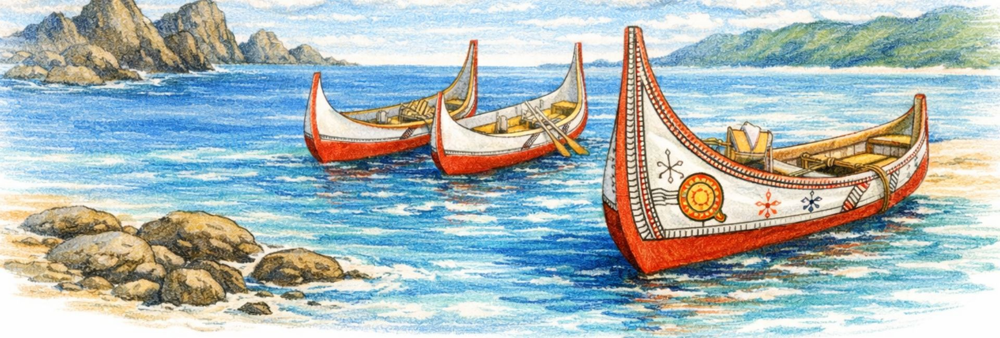
以冬季（11–3 月）德安航空班表排定。整天順著環島公路往同一個方向騎，不走回頭路，傍晚剛好回到紅頭部落的民宿。
蘭嶼機場 → 漁人 → 紅頭 → 南岸 → 野銀 → 東清 → 朗島 → 椰油 → 回到紅頭（約 37 公里）
台東 08:10 起飛，30 分鐘就到。事先跟車行約好在機場交車，戴好安全帽往南出發。
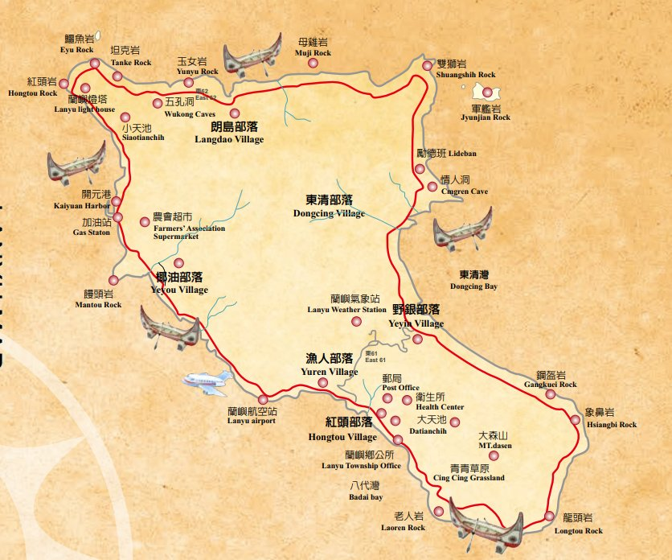
先認識達悟族的拼板舟、傳統服飾與生活器物，接下來一路看到的地下屋和船才有故事。門票全票 100 元，冬季開放時間請先來電確認。
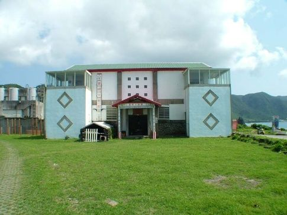
由住在這裡的族人帶路，看半穴式地下屋怎麼就地取材、躲過颱風（需事先預約）。結束後走到旁邊的野銀海灘，花 10 分鐘撿走看到的垃圾，帶離島嶼。
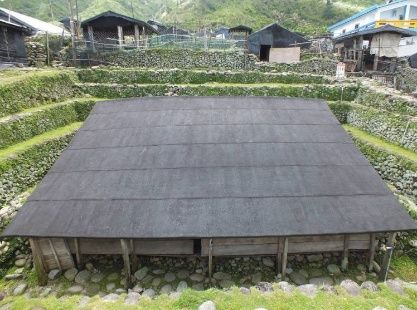
藏在海岸礁岩間的天然冷泉池，旁邊就是潮池與大海。這裡是居民消暑的地方，請放低音量、垃圾帶走。
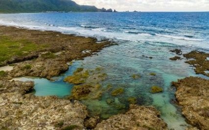
灘頭常停放部落的拼板舟。船身由木板拼合、不用鐵釘，刻著紅白黑三色紋飾。靜靜欣賞就好：不觸碰、不攀爬，拍照前先問過主人。
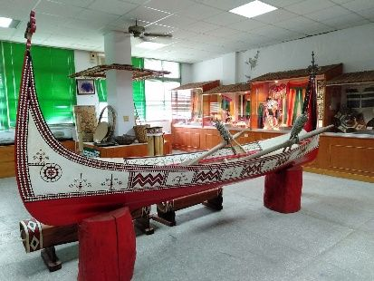
海浪侵蝕出的巨大岩洞，從洞口望出去就是太平洋，也是看日出的熱門地點。礁岩濕滑，穿包鞋慢慢走。
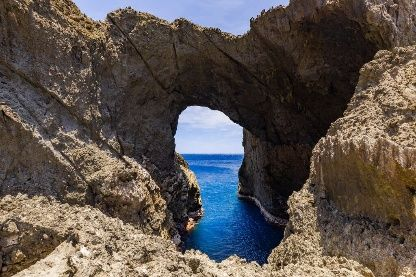
兩座巨岩像一對面海蹲坐的獅子，在環島公路旁就看得到。晚上無光害，也是觀星的好地方。
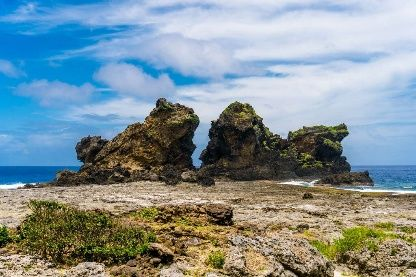
五孔洞是一排並列的海蝕洞，從路邊走一小段就到。繼續往南騎，開元港北邊的岩壁就是紅頭岩，環島公路從它後方穿過。
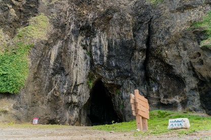
依山傍海的合法民宿，海景房開窗就是大海，頂樓觀景台可以看夕陽。11 月日落約 17:15，夏天約 18:40。
跟著達悟族導覽員找蘭嶼角鴞（嘟嘟霧），再到潮間帶看夜裡出來覓食的生物。穿長袖長褲和包鞋，用紅光手電筒，不追逐、不觸摸、不餵食。21:30 回民宿休息。
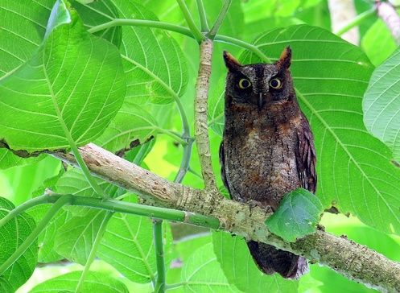
隔天：睡飽、吃完早餐，搭上午班機回台東（冬季有 09:10、10:25、11:10 起飛的班次）。還車可以跟車行約在機場。
行程經過的每一站，出發前先認識它們。
野銀是目前保存最完整的傳統聚落。半穴式地下屋往地下挖、屋頂貼近地面，就地取材又順應地形，是祖先對抗颱風的智慧，也是減少碳足跡的永續建築。
提醒：地下屋是族人的家，須由族人帶領參觀，不擅自進入。
由蘭恩文教基金會設立的文化園區，展示雅美（達悟）族的工藝、服飾與生活器物，是認識蘭嶼的第一站。
不使用鐵釘，以木板拼合而成，船首船尾高高翹起，船身刻有紅白黑紋飾，展現精湛的傳統工藝。
提醒：不觸碰、不攀爬拼板舟；飛魚季期間女性不可碰觸船身。
海岸礁岩間湧出的天然冷泉，清晨和黃昏人最少，可以安靜感受原始岸景。
鄰近乳頭山的海蝕洞，洞口框出整片太平洋，是蘭嶼看日出的推薦地點之一。
形似兩頭獅子的巨岩，位在部落分界上。夜晚星空清楚，是觀星的好地方。
鄰近玉女岩的一排海蝕洞，洞穴深邃神祕，從環島公路旁步行即可抵達。
飛魚是達悟族的聖魚，搭配水芋頭、海木耳等在地食材，就是蘭嶼的味道。美食照片尚未補上，先用文字介紹。
外觀像一艘停在陸上的拼板舟。一樓展示手工藝品，也是文化教室；二樓是寬敞的用餐空間。
推薦：飛魚炒飯、墨魚炒飯
結合當地新鮮海產的海鮮熱炒，在味蕾上探索人之島的豐饒。
推薦：當日新鮮海產熱炒
藏在椰油小巷裡的冰店。飛魚卵在牛奶冰基底中爆開，帶來奇妙的鹹甜感。
推薦：海草飛魚卵雪花冰、芋頭雪花冰
充滿藝術感的裝潢，用紙板取代菜單，西式烹調結合在地食材。冬季可能休業，出發前先確認。
推薦：飛魚卵燉飯、烤豬肉飯
以達悟族的聖魚飛魚入菜，搭配水芋頭、海木耳等在地食材，一口吃到人之島的獨特風味。
推薦：飛魚料理、水芋頭
點照片可以放大，用左右鍵或按鈕切換。
班表、票價和營業時間會隨季節調整，出發前請以官方公告為準。
德安航空，台東豐年機場往返蘭嶼航空站，航程約 30 分鐘，19 人座小飛機。
| 季節 | 去程首班 | 隔天回程 |
|---|---|---|
| 冬季 11–3 月 | 08:10 起飛 08:40 抵達 | 09:10、10:25、11:10 起飛 |
| 夏季 4–10 月 | 07:50 起飛 08:20 抵達 | 08:50、10:00、10:50 起飛 |